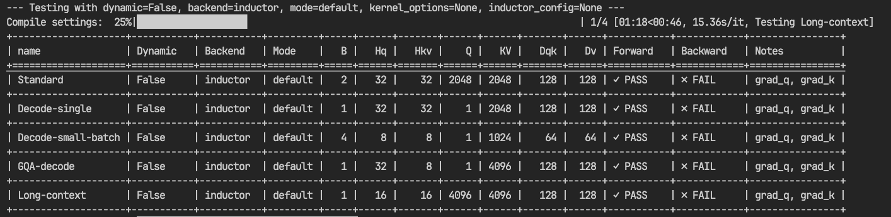
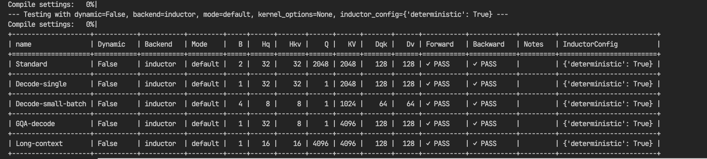
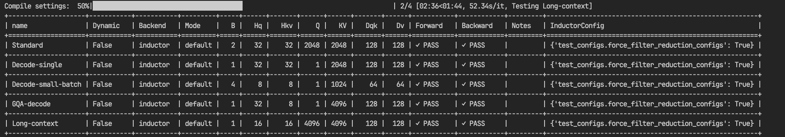

Run-to-run determinism is increasingly a priority in the age of Mixture of Experts (MoEs) and long Reinforcement Learning (RL) rollouts. This guide describes how to ensure that FlexAttention is bitwise equivalent between runs.
All experiments described here were conducted using this script.
It’s important to note that previous guidance on this topic was incorrect. It was previously stated that the only requirements for run-to-run determinism were to avoid dynamic shapes and to compile with inductor mode="default".
This is true for the forward pass, but not for the backward pass.
TL;DR: To enable deterministic results you need to set:
For the forward pass:
torch.compile(flex_attention, dynamic=False, backend="inductor", mode="default")For the forward and backward passes:
The above, plus torch._inductor.config.deterministic = True. See the PyTorch documentation for more details.
Initial Findings
I started with a few hypotheses about the sources of non-determinism in FlexAttention:
- Autotuning variability: When using
max-autotunewith disabled compile caches, if multiple configurations are within a small margin (ε) of optimal performance, and that margin is smaller than the benchmarking noise, a different configuration might be chosen on each run. A different configuration can have different floating-point numerics due to the intra-block reductions performed in the kernel. - Noisy neighbors: Another source of autotuning variability is the “noisy neighbor” problem. For example, if another job starts using the GPUs during autotuning, one of the benchmarked kernels might run slower due to resource contention. This can lead to a suboptimal configuration being chosen.
- Atomics in
score_mod: The backward kernel does not use the non-deterministic algorithm from FlashAttention’s backward pass. However, when backpropagating gradients to buffers captured inscore_mod, atomics are used to flow gradients, which can introduce non-determinism. This is specific to users of that feature and is not the common case.
Dynamic Shapes: During the lowering of FlexAttention, specific decisions are made about block sizes and divisibility based on whether sequence lengths are statically known. When shapes are static, the compiler can make precise divisibility choices that optimize for those exact dimensions. With dynamic shapes, it must make more conservative divisibility assumptions that work across various sequence lengths. These different divisibility choices directly impact the numerical computations within the kernel—different block sizes and reduction strategies lead to different floating-point rounding. This is why running with static shapes in one run and dynamic shapes in another (even with the same actual values) can produce different numerical results, particularly in the backward pass where these reduction differences compound.
Initially, the script produced deterministic results, but it was unclear if all sources of autotuning non-determinism were being triggered. Fortunately, recent additions to PyTorch’s test tooling provide a more direct way to investigate this:
torch._inductor.config.test_configs.distort_benchmarking_result = "random".
This flag forces the autotuner to pick a random configuration from the available choices. After setting this flag, non-determinism was observed (gradients for query/key diverged between runs).

This result was unexpected, but the non-determinism could be reproduced consistently across runs.
Fortunately, another recently introduced flag provides a solution: torch._inductor.config.deterministic = True.
Setting this flag produces deterministic results (the dq, dk, and dv tensors now match bitwise across runs).

This provides a solution, but it’s important to understand why this flag is necessary.
Debugging
I performed a few sanity checks:
- Verified that autotuning was selecting a single, consistent configuration for the FlexAttention backward pass.
- Compared the generated
output_codeto ensure it was identical between runs.
Both checks passed. A key observation was that only the gradients for query (dq) and key (dk) were non-deterministic, while the gradient for value (dv) was deterministic. For those not familiar with FlashAttention, the backward pass consists of two kernels: a preparation kernel to precompute sum(O*dO), and then the main backward kernel.
A rule of thumb for numerical equivalence is to pay close attention to reduction operations. The computation for this delta (sum(O*dO)) is lowered directly into Inductor IR, which then generates the kernel. The dv gradient has no data dependency on this tensor, which explains why it was not affected.
This pointed to the reduction kernel as the source of non-determinism. To confirm this, another helpful test flag was used: torch._inductor.config.test_configs.force_filter_reduction_configs = True.
This flag prevents autotuning over multiple reduction configurations and enforces the selection of a consistent version. Setting this flag, combined with a related bug fix (PR #165729), resolved the issue.
With this fix, running python examples/flex_determinism.py now yields deterministic results (multiple back-to-back runs produce identical checksums).

This result verifies the theory.
Conclusion
We often encourage users to set max-autotune-no-cudagraphs when compiling for FlexAttention. This is because the default configurations are chosen for the median score_mod and mask_mod. However, for many users, this can leave significant performance on the table. As demonstrated, this performance gain can come at the cost of non-determinism.
There is a solution for both the FlexAttention forward and backward passes: kernel_options. This argument, described in the documentation, allows you to directly control the settings used for the Triton kernel.
Recommended Approach for Determinism + Performance:
- Development Phase: Run your attention implementation with
max-autotune-no-cudagraphsto allow Inductor’s autotuning machinery to find the optimal configuration. - Production Phase: Set the mode to
defaultand pass the specifickernel_optionsfound in development toflex_attention.
A broader post on determinism in Inductor is forthcoming. For now, we hope this guide focused on FlexAttention provides some clarity.